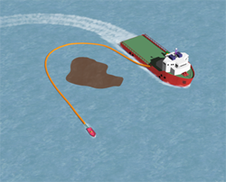
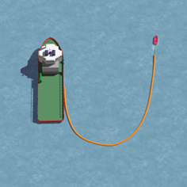
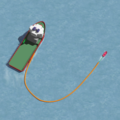
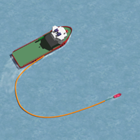

EFFEKTIV OPPSAMLING
Et oljeflak kan ligge i ro dersom:
Det ikke er strøm eller vindStrøm og vind går motsatt vei og opphever hverandre.
Da dette er vanskelig å anslå med sikkerhet, er beste metode å sette ut hele lensen ved siden av oljeflaket og deretter dreie lensefartøyet opp langs flaket og ringe inn dette. Her er det illustrert en utsetting av lense over siden av lensefartøyet.
Hele lensen settes ut ved siden av oljeflaket.

Skipet dreier 90° og ringer inn flaket.
Hvordan angripe et oljeflak i drift
Et oljeflak er i drift dersom:
- Det er strøm til stede
- Det er vind til stede
Begynn med å legge lensefartøyet med baugen mot drivretningen, ca. 1 lenselengde fra flaket.
Lensen settes ut rett akterover, med drivretningen og langs med flaket. Her er det illustrert en utsetting av lense fra hekken av lensefartøyet.
Etter at hele lensen er satt ut, dreier lensefartøyet 180° og danner en U-formasjon på lo side av flaket.

Kursforandring med oljelenser
Når en har slept lensen igjennom et oljeflak kan det være ønskelig å endre kurs, for eksempel for å samle olje i et nytt flak eller å gå tilbake i samme flaket.
Det er 2 måter en normalt endrer kurs på:
”Step-by-step” eller ”Quick-turn”
- Step-by-step
Ved Step-by-step holder skipene lensen i formasjon og forandrer samtidig kursen, for eksempel 30°. Når den ny kurs er oppnådd, forandrer de igjen kursen 30° til. Dette gjøres til ny ønsket kurs er oppnådd.


